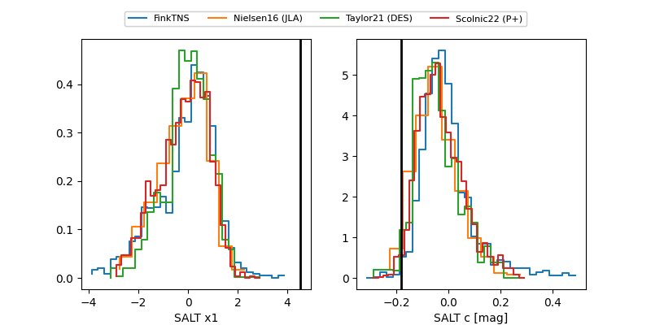

FINK: ZTF25abnozft
Lasair: ZTF25abnozft
ALeRCE: ZTF25abnozft
TNS: 2025wnb
YSE: 2025wnb
ZTF25abnozft (ztf,fink)
2025wnb (tns,yse)
equatorial (ra, dec) = (324.1808,+36.86704)
galactic (l, b) = (85.1403,-11.33581)

last ztfg=20.02, ztfr=19.86
8 ztfg, 3 ztfr detections